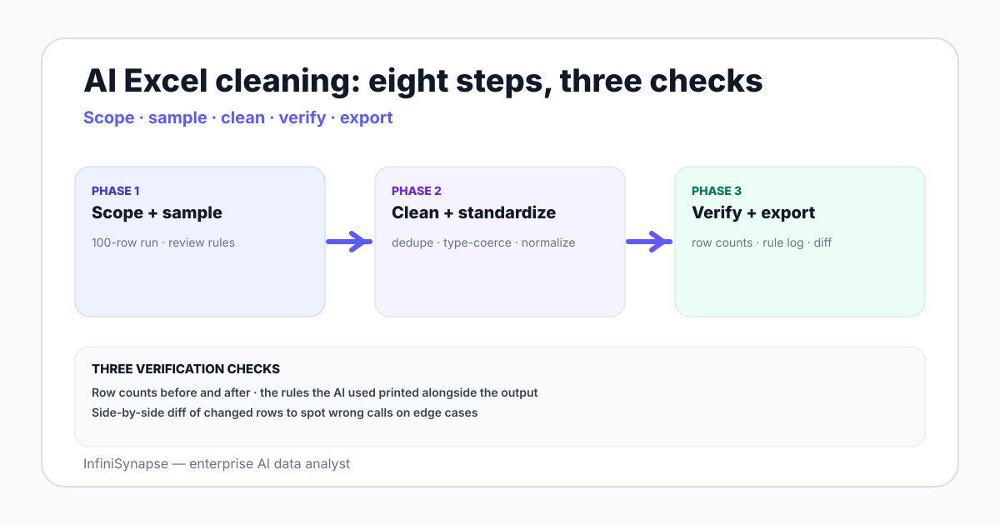

AI to Clean Excel Data in 2026: Methods, Tools, Worked Examples
AI to clean Excel data in 2026 — what AI handles well, what to verify, the tool landscape, and a working cleaning checklist with eight steps.
AuthorInfiniSynapse Research, product and data architecture team
Published2026-06-28 · Last verified 2026-06-28 · Next review 2026-09-28
Evidence baseMicrosoft Excel documentation, OpenAI ChatGPT Advanced Data Analysis reference, Anthropic Claude, OpenRefine documentation, hands-on testing of AI Excel cleaners in 2026.
Disclosure: Published by InfiniSynapse, an AI data analyst used for warehouse-side cleaning. This guide focuses on Excel-side cleaning; InfiniSynapse appears only where the warehouse path is the next step.
TL;DR
AI handles Excel cleaning best on deduplication with fuzzy match, type coercion (date strings to dates, currency strings to numbers), and standardization (mixed-case names, country code normalization).
Always verify three things: row counts before and after, the rules the AI used (it should print them), and the rows the AI changed (a side-by-side diff).
The tool landscape includes ChatGPT and Claude on uploaded files, AI features inside Excel (Copilot), purpose-built tools like OpenRefine and Trifacta, and warehouse-side AI agents for production cleaning at scale.
A working cleaning checklist has eight steps: scope, sample, deduplicate, type-coerce, standardize, validate, audit, export.
For recurring cleaning of the same shape, graduate from Excel-on-Excel to a warehouse pipeline with dbt tests and an AI data agent for ad-hoc checks.
AI handles Excel cleaning best on deduplication with fuzzy match, type coercion, and standardization. Verify row counts before and after, print the rules used, and review changed rows. ChatGPT, Claude, Excel Copilot, OpenRefine, and Trifacta cover the tool landscape. For recurring shapes, graduate to a warehouse pipeline.

What AI handles well for Excel cleaning
Deduplication with fuzzy match. "Customer Acme Inc." vs "Acme, Inc." vs "ACME INC" — AI clusters and proposes a canonical form.
Type coercion. Dates stored as "01/05/2026" with ambiguous DMY/MDY; currency stored as "$1,234.56" strings; numbers stored as text. AI infers the type and produces the casted column.
Standardization. Mixed-case names to title case, country codes to ISO-3166, US state names to two-letter codes, phone numbers to E.164.
Missing-value detection and imputation suggestions. Flag empty cells, propose default values, identify rows with too many blanks to use.
Outlier flagging. Values outside the column distribution with the rule it inferred.
Schema reshaping. Pivot, unpivot, split a combined column ("FirstName LastName" → two columns).
What to always verify on AI Excel cleaning
Row counts before and after. If the AI deduplicated, how many rows changed? If it filtered, what fraction?
The rules the AI used. Demand the AI print every rule it applied — fuzzy match threshold, regex used, type coercion rule. Without rules, you have no audit trail.
The rows the AI changed. A side-by-side diff of changed rows lets you spot the AI confidently making a wrong call on edge cases.
Skipping any of the three has led to silent data corruption in real teams. The cleaning step is the most error-prone place to trust AI without verification.
Scope. Define which columns are in scope and which are reference-only.
Sample. Pull a 100-row sample and run the AI cleaning on it first; review the rules.
Deduplicate. Apply fuzzy match with the threshold the AI prints.
Type-coerce. Convert text-stored numbers, dates, and currencies; cast columns explicitly.
Standardize. Normalize names, country and state codes, phone numbers, emails.
Validate. Check row counts, schema, distribution against the original.
Audit. Save the rules the AI used as a sidecar file with the cleaned data.
Export. Output the clean file plus the rules log.
Three worked Excel cleaning examples
1. Customer list deduplication
Input: 4,200 customer rows from a CSV export with inconsistent naming. Prompt the AI to dedupe with fuzzy match threshold 90%, print the cluster ID it assigned, and propose a canonical name per cluster. Review the clusters of size larger than three by hand. Output: 3,860 rows with a canonical_name column.
2. Date format normalization
Input: a date column with mixed formats — "Jan 5, 2026", "2026-01-05", "1/5/26", "5-Jan-26". Prompt the AI to infer the format per cell, cast to ISO-8601, and flag any cell where the inference confidence is below 0.9 for human review.
3. Country code standardization
Input: a country column with "USA", "United States", "U.S.", "US". Prompt the AI to map every value to ISO-3166-1 alpha-2 and produce a mapping table sidecar. Manual review for ambiguous values (does "Korea" mean KR or KP).
AI is a fast cleaner. Verification is the discipline that turns fast into safe.
When to graduate from Excel cleaning to warehouse pipelines
Three signals:
Recurring shape. You clean the same shape of file every week. That belongs in a dbt model, not an AI chat.
Scale beyond Excel. Above a few million rows, Excel itself becomes the bottleneck.
Audit posture. The cleaning rules need a version-controlled log that survives team turnover.
At that point, sync the source to a warehouse, build the cleaning as dbt models with tests, and use a warehouse-side AI data agent for the ad-hoc checks. See SaaS data platform for the architecture and data integration platforms for the loader choice.
Move recurring cleaning into a warehouse with verification
Connect a Postgres, BigQuery, or Snowflake warehouse where your recurring files land. Seed a small cleaning glossary — canonical names, type rules, standardization tables. Then ask an AI data agent to verify each weekly load and surface anomalies before they reach the dashboard.
AI handles Excel cleaning best on six tasks: deduplication with fuzzy match where it clusters similar variants and proposes a canonical form, type coercion from text-stored numbers and dates to proper types, standardization of names and codes to canonical formats, missing-value detection with imputation suggestions, outlier flagging with the rule it inferred, and schema reshaping like pivoting and column splits. Each task needs a verification step before the cleaning is accepted.
What should I verify when AI cleans Excel data?
Three checks: row counts before and after to spot accidental deletions or duplications, the rules the AI used printed alongside the output so you have an audit trail, and a side-by-side diff of the rows the AI changed to spot confident wrong calls on edge cases. Skipping any of the three has led to silent data corruption in real teams. The cleaning step is the most error-prone place to trust AI without verification.
What tools can use AI to clean Excel data?
Six categories: ChatGPT Advanced Data Analysis and Claude with file upload for general-purpose AI cleaning, Excel Copilot for native Excel integration, OpenRefine for purpose-built messy-data cleaning without AI by default, Trifacta and Alteryx for enterprise data wrangling with ML, and warehouse-side AI data agents for production cleaning at scale once the data lives in a warehouse.
Can AI deduplicate customer data in Excel?
Yes, with fuzzy match. Variants like "Acme Inc.", "Acme, Inc.", and "ACME INC" cluster together. The AI prints the cluster identifier, the similarity threshold it used (typically 85% to 95% depending on dataset shape), and a proposed canonical name per cluster. Review clusters larger than three by hand. Output a canonical_name column rather than overwriting the original so you can audit later.
How do I handle mixed date formats in Excel using AI?
Prompt the AI to infer the format per cell and cast to ISO-8601, returning a confidence score per inference and flagging cells below a confidence threshold like 0.9 for human review. Mixed formats like "Jan 5, 2026", "2026-01-05", "1/5/26", and "5-Jan-26" appear together when data comes from multiple sources, and the AMD/DMY ambiguity is the most common silent corruption source. Always verify low-confidence inferences manually.
When should I move Excel cleaning to a warehouse pipeline?
Three signals: when you clean the same shape of file recurring weekly or monthly which belongs in a dbt model rather than an AI chat, when scale grows beyond a few million rows where Excel itself becomes the bottleneck, and when the audit posture requires a version-controlled log of cleaning rules that survives team turnover. At that point sync the source to a warehouse and build cleaning as dbt models with tests.
What is the eight-step Excel cleaning checklist?
Eight steps: scope which columns are in versus reference-only, sample 100 rows for an initial run, deduplicate with fuzzy match using the threshold the AI prints, type-coerce text-stored numbers and dates, standardize names and codes, validate row counts and schema against the original, audit by saving the rules the AI used as a sidecar file with the cleaned data, and export the clean file plus the rules log together as the final artifact.
Methodology and review notes
Last updated: 2026-06-28 · Next scheduled review: 2026-09-28
This methods guide synthesizes Microsoft Excel documentation, ChatGPT Advanced Data Analysis and Claude reference material, OpenRefine documentation, Trifacta and Alteryx product references, hands-on testing of AI Excel cleaners in 2026, and field experience cleaning operational data files in marketing, ops, and finance teams. The eight-step checklist and three verification steps reflect observed mistakes and mitigations rather than vendor positioning.
Conflict of interest: InfiniSynapse publishes this guide and sells an enterprise AI data analyst. To reduce bias, the page leads with the topic itself, treats InfiniSynapse as one option among many, and links to external sources for every numeric claim.
Update cadence: Reviewed every 90 days for accuracy and link health.